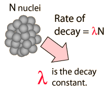

The Radioactive Nucleus as a Clock
If you have a gram of 99Mo right now, then you know that after 66 hours, you are going to have a half gram of 99Mo and a half gram of 99Tc. This can be said without specifying the conditions under which you keep the sample, because you can't change it by heating it, by striking it with lightning, by combining it into a molecule, or any other environmental interaction short of a direct nuclear impact by a high speed particle.
|  | The time for a given nucleus to decay is unpredictable and random, but the rate of decay of a sample is not random but dependent upon nuclear structure details through the decay constant. A sizable sample will have a significant fraction of Avogadro's number of nuclei, and the statistics of such a decay are such that it follows a precise exponential decay pattern. |
The range of half-lives of heavy elements that emit alpha particles varies over 20 orders of magnitude, from about a tenth of a microsecond to 10 billion years. But they all follow exactly the same form of decay, an exponential decay determined by nuclear structure parameters. |  |
The natural radioactive series found on the Earth involve multiple steps, each step with its characteristic "parent" and "daughter" products. Because the radioactive half-life of a given radioisotope is not affected by temperature, physical or chemical state, or any other influence of the environment outside the nucleus save direct particle interactions with the nucleus, then radioactive samples continue to decay at a predictable rate. If determinations or reasonable estimates of the original composition of a radioactive sample can be made, then the amounts of the radioisotopes present can provide a measurement of the time elapsed.
One such method is called carbon dating, which is limited to the dating of organic (once living) materials. For longer time scales appropriate for geologic samples, the Rubidium-Strontium method is an example of a nuclear clock.

The longer-lived radioisotopes in minerals provide evidence of long time scales in geological processes. While original compositions cannot be determined with certainty, various combination measurements provide self-consistent values for the the times of formations of certain geologic deposits. These clocks-in-the-rocks methods provide data for modeling the formation of the Earth and solar system.
| More detail about dating process |
| A brief overview of time. |
| HyperPhysics***** Nuclear | R Nave |